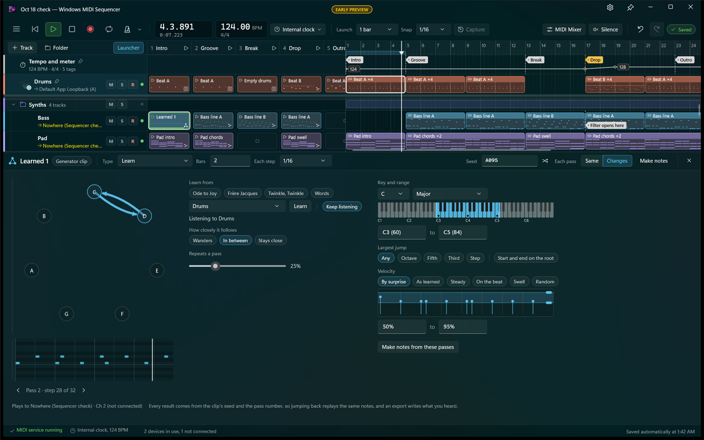

The main window comp in six looks, three light and three dark. Each keeps the layout people know from other DAWs: transport on top, tracks down the left, the launcher, the timeline and the clip editor. What changes is the material, the light and the type. Each one is a stylesheet over the comps' own (../seq.css), so it's quick to try ideas. Open a study's page to see it at full size, or run make.ps1 to capture them again. Porcelain and Clay share one recipe, light and dark: controls defined by their shadows alone, the way the hardware in the inspiration folder does it.

Today Flat dark panels one step apart, thin lines, rounded rectangles, and a rainbow of saturated clips: close to what most new DAWs look like.
Porcelainlight One warm gray material. Every control is a soft key pressed out of it, lit from the top left, so the shadows define the buttons. Each lane is a groove the clips sit in. Color only as small caps, the way a synth marks its encoders. See the second pass, and the approved one dark, and in your window color, with softer shadows.
Claydark Porcelain's recipe in a violet charcoal. Panels are carved, keys and clips are pressed out, and track color shows only as thin glowing strips. Quiet lowercase labels for the window's own words.
Aluminumlight Machined plates split by engraved grooves, under a dark header strip. What you touch is a small graphite object with a crisp shadow. Color lives in knob rings, LEDs and each clip's top edge; notes are printed in ink. See it dark, and in your window color.
Lanterndark Paper lanterns in a dark room: one warm pool of light, clips as lit paper with their notes in ink, launcher clips that stay dark until they play, and keys that light up from inside.
Vellumlight Warm paper, ink hairlines, Sitka for names, and one vermilion accent. Clips are watercolor washes with ink notes. Only what floats, like the clip editor, casts a long soft shadow.
Ink and Golddark Cinematic near-black with grain, drawn in hairlines and white pucks. One warm gold marks whatever is active; tracks differ by muted shade rather than by rainbow.